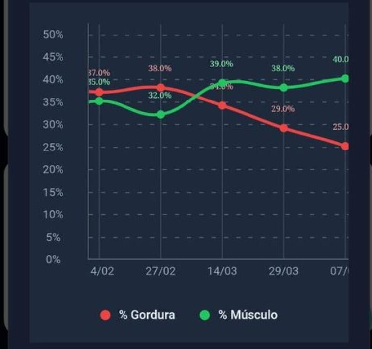

Seu aluno está evoluindo... ...e mesmo assim cancelou?
Você montou o treino.
Você acompanhou.
Você ajustou a estratégia.
Você entregou resultado.
Mas seu aluno não conseguiu enxergar a própria evolução.
E foi embora.
O problema não é falta de resultado.
O problema é falta de percepção de resultado.
O VORTEX PRIMUS transforma evolução em algo que o aluno consegue VER.
Testar Grátis por 7 DiasSem compromisso. Sem risco.
A maioria dos alunos não desiste por falta de resultados.
Desiste porque não consegue enxergá-los.
Imagine dois alunos. Os dois perderam 5kg. Os dois reduziram gordura corporal. Os dois melhoraram a composição corporal.
Mas apenas um consegue visualizar claramente essa transformação.
Qual deles vai continuar motivado por mais tempo?
O Vortex foi criado exatamente pra responder essa pergunta.
Pare de entregar números.
Comece a entregar evolução.
O aluno comum não entende protocolos, percentuais, fórmulas ou dobras cutâneas.
- Protocolos
- Percentuais
- Fórmulas
- Dobras cutâneas
- Gordura diminuindo
- Massa muscular aumentando
- Corpo transformando

É isso que gera motivação.
É isso que aumenta retenção.
É isso que faz o aluno continuar.
O aluno abre o app.
E vê a própria transformação.
A diferença entre "eu acho que melhorei" e "eu VEJO que melhorei".
Avatar Corporal Inteligente
O avatar evolui automaticamente com base nos resultados reais das avaliações.
Seu aluno deixa de depender só da balança. Agora ele consegue visualizar a própria jornada.
Porque aquilo que pode ser visto também pode ser valorizado.
Cada avaliação se transforma numa experiência completa.
- Avatar Corporal
- Gordura Corporal
- Massa Muscular
- Gordura Visceral
- Idade Metabólica
- Circunferências
- Histórico Evolutivo
- Comparações automáticas
Tudo organizado de forma intuitiva.

O sistema que mantém o aluno conectado ao processo.
- Treina mais
- Falta menos
- Segue melhor a dieta
- Compartilha conquistas
- Renova mais vezes
- Indica mais pessoas
Ele cancela.
Criado pra recompensar.
Não pra punir.
Seu aluno evolui. Sobe de nível. Recebe reconhecimento. Vê a própria transformação.
A evolução deixa de ser subjetiva.
Ela se torna visível. Mensurável. Motivadora.

Tudo que você precisa pra fazer seu aluno ver a evolução.
- Cadastro ilimitado de alunos*
- Avaliações físicas completas
- Avatar Corporal Inteligente
- Evolução gráfica automática
- Agenda de reavaliações
- Histórico completo
- Relatórios profissionais
- Sistema Primus
- Atualizações contínuas
- Plataforma online
*conforme o plano escolhido
Imagine seus alunos dizendo
Agora eu consigo ver minha evolução.
Não fazia ideia do quanto eu tinha melhorado.
Isso me motivou a continuar.
Quero chegar no próximo nível.
Essa é a diferença entre mostrar números e mostrar transformação.

Teste o Vortex por 7 dias.
De graça.
- Descubra como transformar resultados em retenção.
- Descubra como aumentar o valor percebido do seu trabalho.
- Descubra como fazer seus alunos enxergarem aquilo que você já entrega todos os dias.
Sem compromisso. Sem risco.